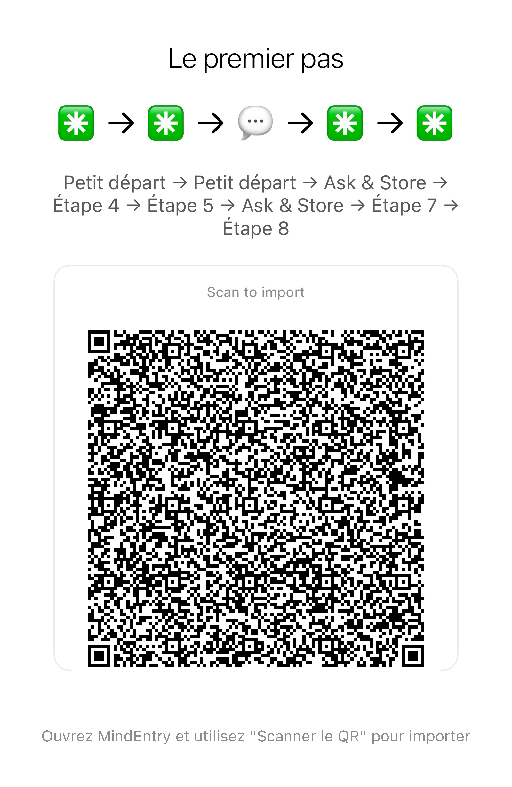

Pas de l’optimisation de vie. Une réinitialisation cognitive.
De petites réinitialisations étape par étape pour les moments où l’esprit est surchargé, bloqué, figé ou en boucle.
Même une méthode de réinitialisation peut devenir une charge cognitive si vous devez vous souvenir des étapes. CogniHack fonctionne avec MindEntry afin que le système garde la séquence à votre place.
Dernière mise à jour : 2026-06-02
La plupart des « life hacks » vous demandent de mieux planifier, de réfléchir davantage, de mieux vous organiser ou de vous optimiser.
Mais lorsque l’esprit est surchargé, bloqué dans une boucle, figé ou paralysé, réfléchir davantage ne fait généralement qu’aggraver les choses.
Dans ces moments-là, vous n’avez peut-être pas besoin de conseils. Vous avez peut-être simplement besoin que l’étape suivante soit placée devant vous.
Un CogniHack est une séquence de réinitialisation cognitive exécutée dans MindEntry. Les étapes n’utilisent pas d’autres applications MINDBEBOP.
Il peut inclure des réinitialisations sensorielles, de petites actions physiques, des méthodes de recentrage (grounding) ou des étapes Stateful telles que Your Situation et Your Step.
Si la séquence ouvre une autre application MINDBEBOP, comme MindFlipOut, MindShoutOut, MindZoneOut, MindBackOut, MindEaseOut ou MindBackyard, il devient alors une Recipe.
MindEntry conserve la séquence pour vous afin que vous n’ayez pas à mémoriser, organiser ou décider de ce qui vient ensuite.
Suivez simplement l’étape visible suivante.
Certains CogniHacks sont des Stateful Recipes.
Au lieu d’exiger tous les détails à l’avance, ils peuvent demander ce qui est important au moment où la séquence est en cours d’exécution.
La recette conserve la structure. Vous apportez la situation actuelle.
Cette réponse peut ensuite être réutilisée tout au long du reste de la séquence.
Un Stateful CogniHack peut par exemple demander :
Cela permet de ne pas avoir à garder la séquence de réinitialisation en tête tout en lui permettant de s’adapter à votre situation actuelle.
La situation : Votre cerveau « bufferise ». L’anxiété, les pensées en boucle ou une paralysie liée au TDAH ont saturé votre mémoire de travail, laissant votre esprit enfermé sur lui-même.
La méthode du 5-4-3-2-1 est déjà connue comme technique de recentrage sensoriel. Mais lorsque l’esprit est saturé, devoir se souvenir des étapes peut devenir une charge supplémentaire.
C’est lorsqu’elle est exécutée via MindEntry qu’elle devient un CogniHack. Vous n’avez plus besoin de retenir toute la séquence — seulement de suivre l’étape affichée.
Exécuter comme un CogniHack :
Importez cette recette dans le MindEntry Recipe Runner. Un écran, une étape à la fois. Aucun besoin de mémoriser la séquence.
Méthode 1 : Scanner pour importer

Méthode 2 : Copier-coller le code dans MindEntry
La situation : Vous savez ce qui doit être fait, mais vous n’arrivez pas à commencer. La tâche paraît trop grande, trop compliquée ou trop lourde. Au lieu de vous lancer, vous vous retrouvez à faire défiler des contenus, organiser, rechercher ou simplement penser à la tâche sans agir.
La règle des 2 minutes est souvent utilisée pour lutter contre la procrastination. Mais lorsque vous êtes bloqué, trouver comment réduire une tâche peut devenir une tâche supplémentaire.
Exécuté dans MindEntry, cela devient un Stateful CogniHack. La structure reste la même, mais la tâche du moment est fournie pendant l’exécution.
Exécuter comme un CogniHack :
Importez cette recette dans le MindEntry Recipe Runner. Un écran, une étape à la fois. Aucun besoin de mémoriser la séquence.
Méthode 1 : Scanner pour importer

Méthode 2 : Copier-coller le code dans MindEntry
Même une méthode de réinitialisation peut devenir difficile à utiliser lorsque l’esprit est déjà saturé.
Si vous devez retenir l’ordre, garder les étapes en tête ou décider de « ce qu’il faut faire ensuite », la méthode elle-même crée une nouvelle friction cognitive.
MindEntry réduit cette friction en gardant la séquence à votre place.
Vous n’avez qu’à suivre l’étape suivante affichée.
Copyright © 2026 MINDBEBOP — All rights reserved.